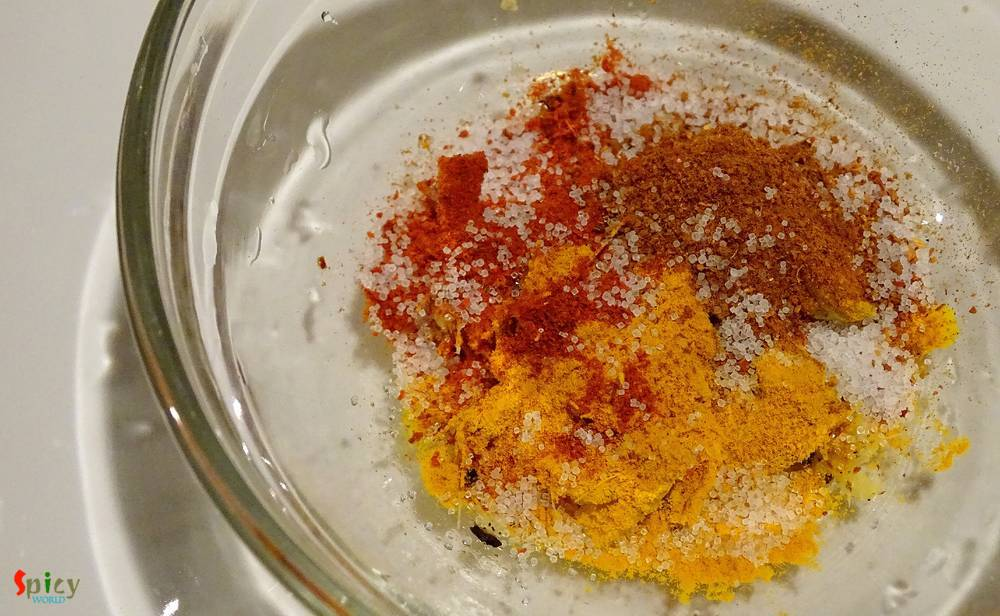
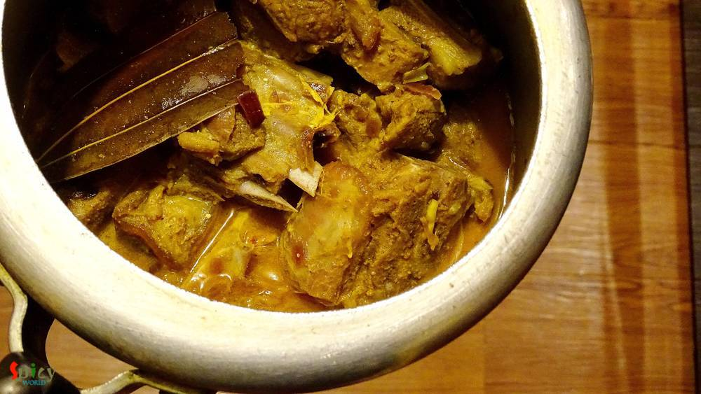
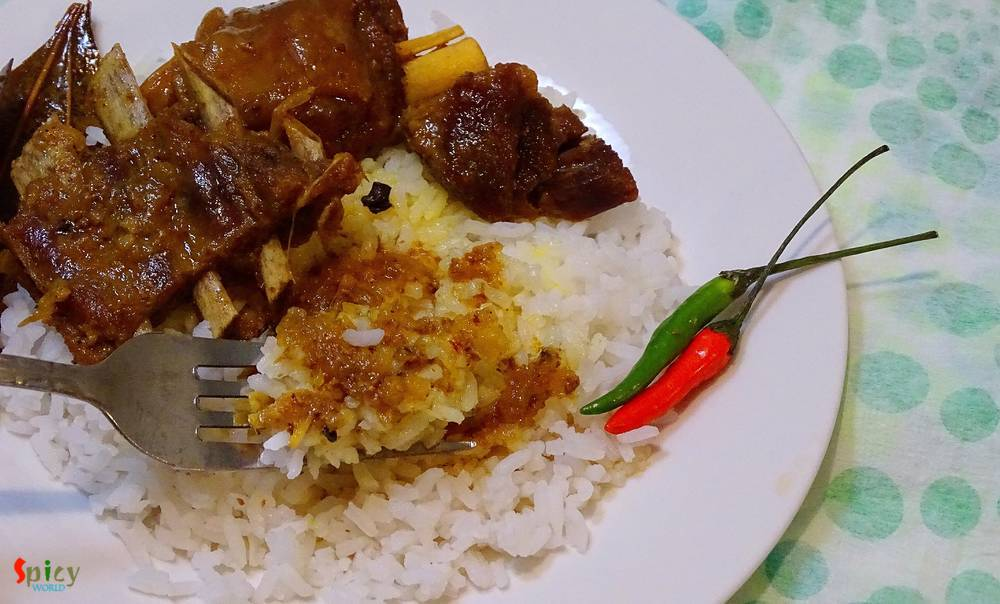

Simple and Easy Recipes
Adabata aar kacha-lonkar Mutton / Mutton curry with ginger and green chilies
© 2016 Spicy World, Published on: Jan 20, 2016
Few days before I saw a fantastic picture of mutton curry in facebook. The caption was 'adabata aar kacha lonka diye mutton'. After seeing that picture, I decided to make it on dinner with some steamed rice. As the picture didn't provide the detailed recipe, except ginger and green chilies, I followed my own instinct while making the curry. After finishing, I got a thin, flavorful, tasty gravy and soft, succulent mutton pieces. The fresh flavour of green chilies makes the curry more scrumptious. The recipe is very simple and takes very less time to cook. Try this in your kitchen and let me know how it turns out.

Ingredients
- 10-12 mutton pieces.
- 1 onion finely chopped.
- 2 bay leaves.
- 4-5 green chilies.
- 2 inches of ginger.
- 3 green cardamoms.
- 6-7 black peppercorns.
- 4 cloves.
- Spice powder (1 Teaspoon of turmeric powder, 1 Teaspoon red chilli powder, 1/2 Teaspoon garam masala).
- Salt and sugar.
- 4 Teaspoons of curd / yogurt.
- 4 Tablespoons of mustard oil.
- Water.

Steps
Put the ginger, green cardamoms, cloves and black peppercorns in a pestle.
Crush them very well. Do not make paste out of them.
Now add all the above mentioned spice powder and dome salt to the crushed masala.
Add 1 Teaspoon of mustard oil and mix everything well.
Wash the mutton pieces very well and drain all the water.
Marinate the mutton with that masala mix and 4 Tablespoons of curd.
Keep it in fridge for 2-3 hours.
Heat the remaining mustard oil in a pan.
Add bay leaves in the hot oil.
Add chopped onion. Fry them for 6-7 minutes.
Then add the marinated mutton. Mix very well for 5-7 minutes.
After that add some salt, pinch of sugar and a cup of water. Mix well and cook till the mutton becomes fully tendor.
After cooking it properly, add 4-5 green chilies to the curry. Simmer for another 5-7 minutes.
After some time green chilies will release its flavour, then turn off the heat.
Let it rest for 3 minutes before serving.
Your adabata aar kancha lonkar mutton is ready ...
Enjoy this hot with some plain rice ...
")